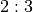

Bet Class¶
This chapter will examine the Bet class, and its
suitability for the game of Craps. We’ll expand the design to handle
additional complications present in real casino games.
We’ll look at details of craps betting in Bet Analysis.
This will lead to some design changes. We’ll cover these in Bet Rework.
We can then extend the Bet class hierarchy to include an
additional kind of bet that’s common in Craps. We’ll cover the
details in CommissionBet Design.
We’ll detail the deliverables in Bet Deliverables.
Bet Analysis¶
A Bet instance describes an amount that the player has wagered on a specific
Outcome object. This is a simple association of an amount, the Outcome object,
and a specific Player instance.
When considering the various line bet outcomes (Pass Line, Come Line,
Don’t Pass and Don’t Come), we noted that when a point was established
the bet was either a winner or a loser, or it was moved from the line to
a particular number based on the throw of the dice. We’ll need to add
this responsibility to our existing definition of the Bet class.
This responsibility can be implemented as a setOutcome()
method that leaves the amount intact, but changes the Outcome instance
from the initial Pass Line or Come Line to a specific point outcome.
A complexity of placing bets in Craps is the commission (or vigorish)
required for Buy bets and Lay bets. This is a 5% fee, in addition to the
bet amount. A player puts $21 down, which is a $20 bet and a $1
commission. We’ll need to add a a commission or vig responsibility to
our definition of the Bet class.
This price to place a bet generalizes nicely to all other bets. For most
bets, the price is simply the amount of the bet. For Buy bets, the price
is 5% higher than the amount of the bet; for Lay bets, the price depends
on the odds. This adds a new method to the Bet class to compute
the price of the bet. This has a ripple effect throughout our Player class
hierarchy to reflect this notion of the price of a bet. We will have to
make a series of updates to properly deduct the price from the player’s
stake instead of deducting the amount of the bet.
There are two parts to creating a proper Craps bet: a revision of the base
Bet class to separate the price from the amount bet, and a new CommissionBet
subclass to compute prices properly for the more complex Craps bets.
Bet Rework¶
The Bet class associates an amount and an Outcome instance.
The Game class may move a Bet instance to a different Outcome instance to
reflect a change in the odds used to resolve the bet. In a
future round of design, we can also associate a it with the Player instance.
A bet is not a good candidate for typing.NamedTuple because, in craps,
it’s mutable. If we chose to to use the @dataclass(frozen=True) decorator,
we’ll need to change the decorator to @dataclass(frozen=False), allowing
the object to be mutable and change state when a pass-line or come bet is moved.
Methods¶
-
Bet.setOutcome(self, outcome: Outcome) → None¶ -
Sets the
Outcomefor this bet. This has the effect of moving the bet to anotherOutcome.
-
Bet.price(self) → int¶ Computes the price for this bet. For most bets, the price is the amount. Subclasses can override this to handle buy and lay bets where the price includes a 5% commission on the potential winnings.
For Buy and Lay bets, a $20 bet has a price of $21.
CommissionBet Design¶
-
class
CommissionBet¶ CommissionBetextendsBetwith a commission payment (or vigorish) that determines the price for placing the bet.
Methods¶
-
Bet.price(self) → int Computes the price for this bet. There are two variations: Buy bets and Lay bets.
A Buy bet is a right bet; it has a numerator greater than or equal to the denominator (for example,
 odds, which risks 1 to win 2),
the price is 5% of the amount bet. A $20 Buy bet has a price of $21.
odds, which risks 1 to win 2),
the price is 5% of the amount bet. A $20 Buy bet has a price of $21.A Lay bet is a wrong bet; it has a denominator greater than the numerator (for example,  odds, which risks 3 to win 2), the price is 5% of of the amount. A $30 bet Layed at odds has a price of $31, the $30 bet, plus the vig of 5% of $20 payout.
Bet Deliverables¶
There are three deliverables for this exercise.
The revised
Betclass.The new
CommissionBetsubclass. This computes a price that is 5% of the bet amount.A class which performs a unit test of the various
Betclasses. The unit test should create a couple instances ofOutcome, and establish that thewinAmount()andprice()methods work correctly. It should also reset theOutcomeobject associated with aBetinstance.
We could rework the entire Player class hierarchy for
Roulette to compute the Bet object’s price in the placeBets(),
and deduct that price from the player’s stake. For Roulette, however,
this subtlety is at the fringe of over-engineering, as no bet in Roulette has a commission.